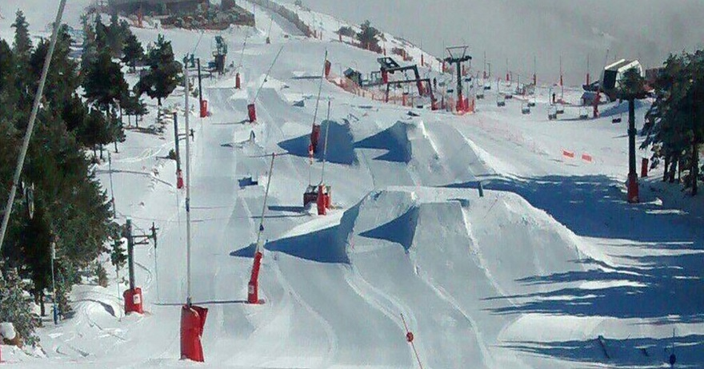
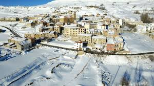

Valdelinares
La estación de esquí de Valdelinares, ubicada en la Sierra de Gúdar, Teruel, es la estación más alta de la Comunidad Valenciana.más de 17 kilómetros esquiables, Valdelinares ofrece pistas para todos los niveles, siendo especialmente popular entre familias y principiantes. Su moderna infraestructura incluye áreas de esquí, zonas de trineo, escuela de esquí y servicios de alquiler, garantizando una experiencia completa en la nieve. Rodeada de paisajes montañosos, Valdelinares es un destino accesible y acogedor para disfrutar de los deportes de invierno.
